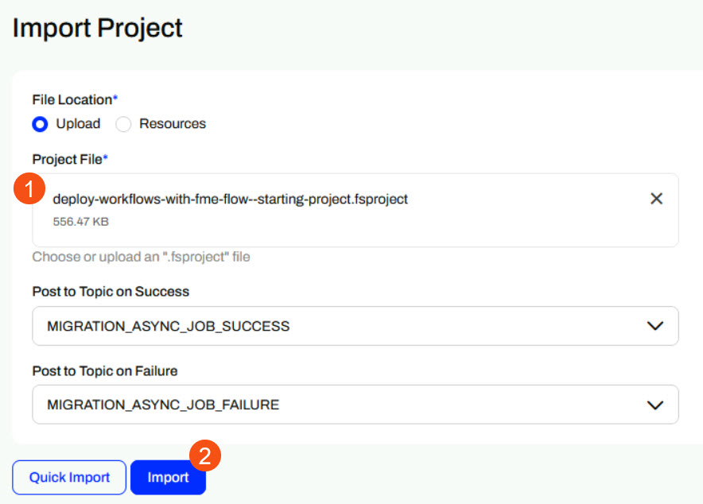
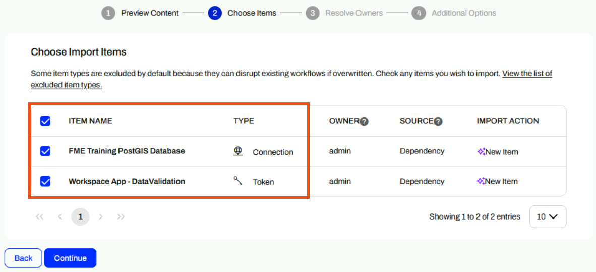
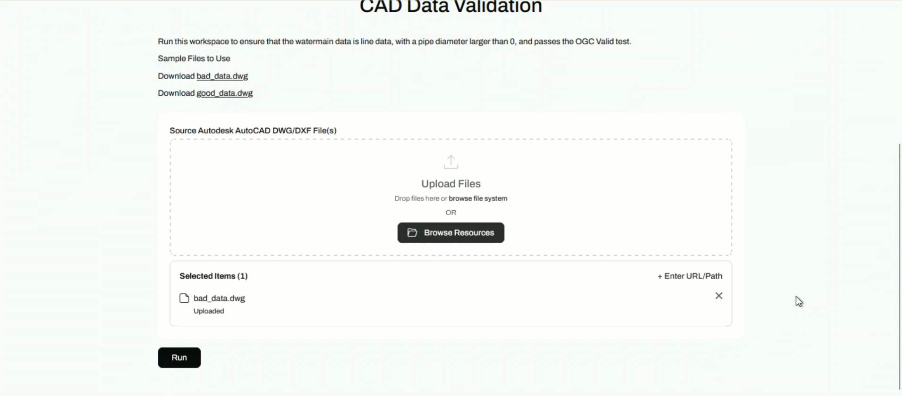

Learning Objectives
After completing this lesson, you’ll be able to:
- Navigate the FME Flow interface.
- Start and trigger an FME Flow Automation.
- Open and use an FME Flow Workspace App.
Resources
If you're taking a live Safe Software-hosted training course or using an on-demand lab for this course, we've already imported the content for this lesson into your FME Flow.
If you're completing this lesson with your own FME Flow, you must import the starting project with the content into your FME Flow. If you don't want to import this project on your own FME Flow, you can just read along; however, later exercises in the learning path will require importing projects.
Expand for Steps to Import the Starting Project
3) Navigate to your FME Flow and open Projects. Click Import.
4) Upload deploy-workflows-with-fme-flow--starting-project.fsproject as the Project File and then click Import.

5) The first step is Preview Content, where you may choose not to overwrite existing items. If all your items are New Items, you don't need to worry about overwriting existing items. Click Continue.
6) The next step is to select connections and tokens to import. By default, they are not selected to be imported. Select both the FME Training PostGIS Database Connection and the Workspace App - Data Validation Token to import. If these aren't imported, the workflows will not run successfully. Click Continue.

7) The Resolve Owners step only allows you to reassign the project contents to a different user if the admin user doesn't exist on your FME Flow. Click Continue and then click Import Project from the Additional Options step. The project will import and display its import status from the same page.
If the project import failed, check that you uploaded the encryption key and repeat the process. If it still fails, contact us at train@safe.com.
Explore FME Flow Apps & Automations
In this lesson, you'll explore the power of FME Flow through a guided, hands-on tour. You'll use FME Flow's two most popular features - FME Flow Apps and Automations.
 Automations allow workspaces to run automatically without manual intervention. The automation scenario you will explore performs a nightly database update set to run a workspace.
Automations allow workspaces to run automatically without manual intervention. The automation scenario you will explore performs a nightly database update set to run a workspace.
 Flow Apps turn FME workspaces into user-friendly web apps. You'll explore and use a Flow App that performs validation on a CAD dataset and returns a report of features that passed or failed validation to you.
Flow Apps turn FME workspaces into user-friendly web apps. You'll explore and use a Flow App that performs validation on a CAD dataset and returns a report of features that passed or failed validation to you.
Automate Database Updates
For the first part of this tour, you will start and trigger an Automation that runs a workspace to perform a database update. While reading and writing to any of FME's many supported formats, this workspace reads Parks data from our FME Training PostGIS database and writes it to a SQLite database on FME Flow. This Automation runs on a schedule every 15 minutes to keep the database up to date with the latest data.
From the FME Flow Dashboard, use the side menu to select Automations and then navigate to the Parks Data Sync Automation.

This Automation has two nodes - a Schedule Trigger to instigate the workflow and a Run a Workspace Action that performs the database update.

The Automation runs on a 15-minute schedule. Click Refresh to see the updated event counts to reflect the workflow runs.

Now that the Automation is running, check the timestamp for the SQLite database in Resources > Data > Output to ensure the Automation has updated the data.

Now you’ve inspected a running Automation and seen the updated output in Resources, you’ve experienced the value of FME Flow Automations firsthand. With just a few clicks, you ran a fully automated process that keeps data current—no manual intervention needed. This is the power of FME Flow: it takes repetitive, time-sensitive tasks and turns them into reliable, hands-off workflows that run exactly when and how you need them to. Whether you're managing data updates, syncing systems, or triggering reports, Automations help your organization work smarter, not harder.
Access No-Code Data Integration Apps
Next, you’ll explore an App that lets users upload CAD files and validate their contents. You don't need any FME experience to access FME functionality using Flow Apps.
First, use the side menu to navigate to Flow Apps and open the Data Validation App. The App opens directly in the web browser.

This App provides some sample data to download by clicking the link. Then, upload the bad_data.dwg from the file system to the App.

Now that you have your data input set, Run the App.

Once the workspace processes, the app presents the HTML report to you directly in the web browser. It features a count of failed validation features, an interactive data map, and a table displaying why each failed validation.

Lastly, you may repeat running the App with the good_data.dwg file to see the resulting HTML report for data that passes validation.
Now that you’ve submitted CAD data through the Flow App and reviewed the validation report in your browser, you’ve seen how FME Flow can turn complex data checks into a fast, user-friendly experience. This app runs a workspace behind the scenes to catch geometry issues, missing attributes, and other common CAD errors—then instantly delivers a clear, easy-to-read report. With FME Flow Apps, anyone can perform the validation processes that once required specialized software and manual effort, anytime from a web page. It’s a powerful way to ensure data quality while saving time and reducing back-and-forth.